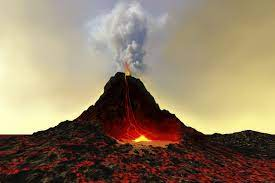

A stratovolcano, also known as a composite volcano, is a conical volcano built up by many layers (strata) of hardened lava and tephra.[1] Unlike shield volcanoes, stratovolcanoes are characterized by a steep profile with a summit crater and periodic intervals of explosive eruptions and effusive eruptions, although some have collapsed summit craters called calderas. The lava flowing from stratovolcanoes typically cools and hardens before spreading far, due to high viscosity. The magma forming this lava is often felsic, having high to intermediate levels of silica (as in rhyolite, dacite, or andesite), with lesser amounts of less viscous mafic magma.[2] Extensive felsic lava flows are uncommon, but have travelled as far as 15 km (9 mi).[3]
Stratovolcanoes are sometimes called composite volcanoes because of their composite stratified structure, built up from sequential outpourings of erupted materials. They are among the most common types of volcanoes, in contrast to the less common shield volcanoes.[4] Two examples of stratovolcanoes famous for catastrophic eruptions are Krakatoa in Indonesia, which erupted in 1883, and Vesuvius in Italy, having erupted in 79; both eruptions claimed thousands of lives. In modern times, Mount St. Helens in Washington State, US, and Mount Pinatubo in the Philippines have erupted catastrophically, but with fewer deaths.
The existence of stratovolcanoes on other bodies of the Solar System has not been conclusively demonstrated.[5] One possible exception is the existence of some isolated massifs on Mars, for example the Zephyria Tholus. Since 1600 CE, nearly 300,000 people have been killed by volcanic eruptions.[15] Most deaths were caused by pyroclastic flows and lahars, deadly hazards that often accompany explosive eruptions of subduction-zone stratovolcanoes. Pyroclastic flows are swift, avalanche-like, ground-sweeping, incandescent mixtures of hot volcanic debris, fine ash, fragmented lava, and superheated gases that can travel at speeds over 160 km/h (100 mph). Around 30,000 people were killed by pyroclastic flows during the 1902 eruption of Mount Pelée on the island of Martinique in the Caribbean.
In recorded history, explosive eruptions at subduction zone (convergent-boundary) volcanoes have posed the greatest hazard to civilizations.[15] Subduction-zone stratovolcanoes, such as Mount St. Helens, Mount Etna and Mount Pinatubo, typically erupt with explosive force because the magma is too viscous to allow easy escape of volcanic gases. As a consequence, the tremendous internal pressures of the trapped volcanic gases remain and intermingle in the pasty magma. Following the breaching of the vent and the opening of the crater, the magma degasses explosively. The magma and gases blast out with high speed and full force.As a consequence, the tremendous internal pressures of the trapped volcanic gases remain and intermingle in the pasty magma. Following the breaching of the vent and the opening of the crater, the magma degasses explosively. The magma and gases blast out with high speed and full force.